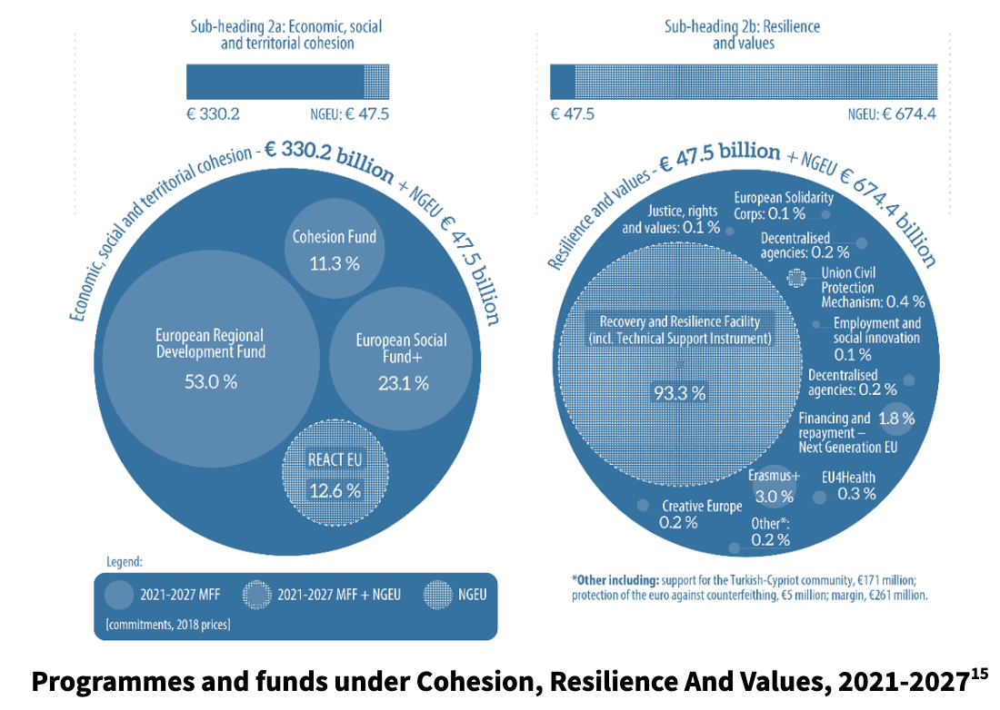

All in this together?: Regional inequalities remain a pervasive problem in European cohesion, with disparities in income, wellbeing, and living standards existing both between and within Member States. As the European Regional Development Fund (ERDF) focuses on building a more competitive and greener future for Europe in 2021-2027, how can the EU ensure this future is enjoyed equally across the European regions?
By Micaela Lebed (NO)
One of the EU’s main tasks as a union is to create cohesion throughout Europe to ensure the equality of standards of living between Member States. The EU’s main tool to tackle this goal is Cohesion policy and its four funds, which aim to encourage economic growth in less developed areas by funding projects that ensure equal access to public services, housing and employment between regions. The 2021-2027 Cohesion policy focuses on developing a competitive, sustainable, connected and inclusive Europe. The policy entails direct cooperation between the European Commission and the Member States. The process of applying the Cohesion policy starts with the Member States drafting national strategies and proposing programmes that the cohesion funds can support. When these proposals are approved by the Commision, the programmes allocated funding from one of the cohesion funds and implemented, monitored and evaluated by the Member States. Although the EU spends about 34% of its overall budget to fund Cohesion policy measures, it is unclear whether this approach to solving regional inequalities is effective.
In addition the benefits do not seem to reach all Member States equally. Although convergence is speeding up, there is still a stark urban/rural
divide in terms of, amongst other things, employment, economic growth, internet access, pollution and education. This divide is potentially exacerbated
by the Cohesion policy’s focus on funding mainly urban centres. As the effects of climate change are predicted to have harsher impacts on rural areas,
it will be crucial that the EU take steps to ensure a fair and even transition to a green and circular economy.
The European Commission is the executive branch of the European Union, responsible for managing and allocating funding. For example, it distributes cohesion funding to Member States and monitors the progress of each programme. Within the Commission, the Directorate-General for Regional and Urban Policy (DG REGIO) develops and carries out the Commission’s regional policy. For instance, early this year, DG REGIO presented the 8th Cohesion Report, which looks at the main changes in territorial disparities over the past decade and how policies have affected these disparities.
In cooperation with the Commission, Member States agree on one or more Operational Programmes (OP) that fit into one of the thematic points of the Cohesion policy. Managing authorities implement, monitor and evaluate the programmes. These managing authorities can be national, regional, local or private authorities sanctioned by a Member State.
The European Court of Auditors (ECA) monitors
the use of cohesion funding by conducting independent examinations. While national actors and regional authorities are responsible for controlling
compliance and cooperating with project beneficiaries to check that the funds received are used in a compliant manner, the ECA supervises these
authorities by carrying out audits.
The European Statistical Office (Eurostat) provides key statistical information on the various metrics of regional inequalities. For example, the
Regions and Cities Illustrated (RCI) tool gives a good overview of
current data on inequality metrics such as education, economy and labour market.
How does a region develop economically? The article ‘Core vs. Periphery’ outlines two ways:
The EU’s Cohesion policy seeks to precipitate option 1 and deter option 2 by facilitating the flow of capital to less developed regions.
The 2021-2027 Cohesion policy focuses on five thematic points: competition, the
transition to a net-zero carbon economy, mobility, social inclusion and sustainable urban development. It funds projects across the EU through four
specific funds: the European Regional Development Fund (ERDF) which focuses on strengthening the competitiveness of commercial enterprises, the
European Social Fund (ESF) which focuses employment and education, the Cohesion Fund which focuses on environmental and transportation projects and
the Just Transition Fund (JTF) which alleviates the socio-economic costs triggered by the climate transition. The EU spends about 34% of its overall
budget on cohesion policy, which amounted to EUR 367 billion for the period of 2014-2020.
Other funding mechanisms can be found under NextGenerationEU (NGEU), the EU’s recovery fund.
The literature that attempts to evaluate the EU’s Cohesion policy is inconclusive. Some research projects have found positive long-term effects, others only positive short-term effects while some no effect or even negative effects. Whether cohesion policy is the best way to address regional inequalities and encourage convergence is still unclear.
Although convergence between Member States has sped up, regional inequalities remain prevalent throughout the EU. Internet access is widely available but high speed connections are only available to two out of three urban residents and only one out of six rural residents. Air and water pollution remain high in less developed regions. Educational attainment and skills, such as tertiary education, life-long learning and digital skills, are concentrated in metropolitan regions, especially capitals. Similarly, entrepreneurship and innovation are also concentrated around metropolitan regions.
Not all Member States benefit from the implementation of the Cohesion policy equally. In their analysis
of regions in Germany, Italy, Spain and the UK, Crescenzi and Giua (2018) suggest that while Germany and the UK benefited from rises in regional growth
and employment respectively, Spain and Italy have only seen limited benefits after 2008. They argue that taking into account national factors instead of
just regional ones when developing OPs might benefit Member States in the long term.
The ‘Lagging Regions’ report published by the EU Commission in 2017
describes two types of lagging regions. First, low-growth regions are less developed and transition regions characterised by a persistent lack of growth,
including Greece, Spain, Italy and Portugal. Second, low-income regions cover regions with a GDP below 50% of the EU average, including Bulgaria, Hungary,
Poland and Romania.
As the EU transitions to a digital, circular and green economy, it is crucial that measures are taken to ensure that this transition happens evenly across
Member States. Indeed, it is likely that this transition will hit rural and less developed areas the hardest
because of factors such as slower internet connections, lower digital skills and a lack of IT equipment. In addition, the EU’s ageing population will lead to
already shrinking areas to shrink even more, which will affect growth potential, skills development and access to services.
In the last 10 years, the Cohesion policy has become increasingly urban-focused. An overview of recent EU documents and briefings reveal four core beliefs of this urban focus. First, economic growth will trickle down from bigger cities, to medium-sized cities, to smaller cities, and reach towns within polycentric urban regions. Second, this economic growth in urban regions will spill-over to peripheral and remote areas. Third, having multiple urban centres will even out the gaps between expanding urban regions and peripheral regions. Fourth, urban regions have a responsibility to develop their peripheral areas. To summarise, stimulating economic activity in urban areas will benefit all types of regions.
Rauhut (2020) identifies this as a version of the Growth Pole Theory, developed in the 1950s in post-war France. To put it simply, Growth Pole Theory is the
idea that economic growth in developed regions produces favourable trickle-down effects in lagging regions. This idea has been challenged by the fact that
developed regions will attract capital and labour from lagging regions, thus limiting their development.
A contrasting perspective is the City Network Theory and its ‘dissociated city hypothesis’. This is the idea that, with global supply chains replacing
regional ones, cities have become globally interconnected and must cut ties with their hinterlands. This leaves peripheral municipalities isolated from
capital inflow and thus makes economic development nearly impossible. The EU’s urban focus may thereby lead peripheral areas to fall behind, hindering the
process of convergence and strengthening the urban/rural divide.
To conclude, cohesion is a fundamental part of the European Union. It is the ambition to ensure that all European citizens, no matter where they are born, can expect the same standards of living. Though some headway has been made towards this goal, disparities between both Member States and between regions remain pervasive. The oncoming effects of climate change and an ageing population will hit vulnerable regions the hardest, making a bad situation worse.
Questions to consider: